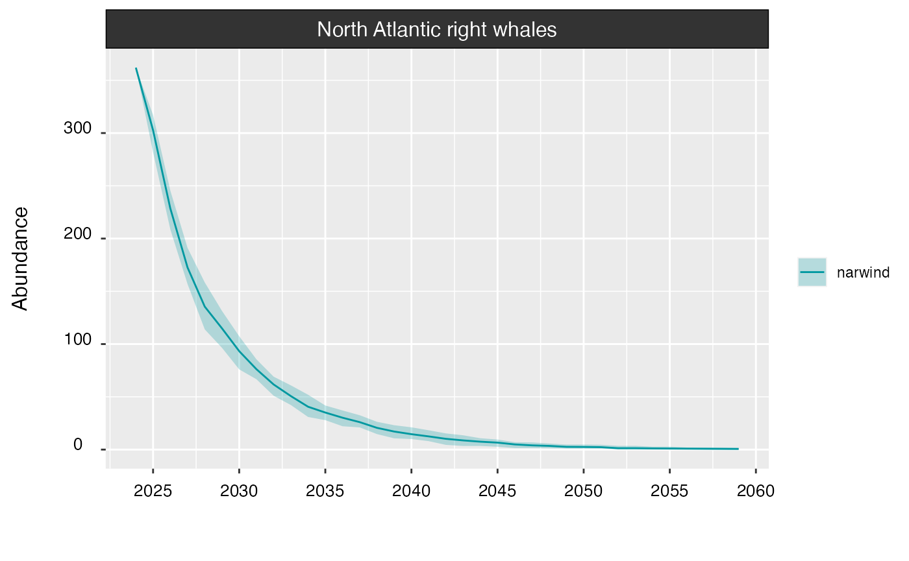

Getting started with narwind
Phil Bouchet, Enrico Pirotta, Len Thomas, Catriona Harris
Centre for Research into Ecological & Environmental Modelling, University of St Andrews2023-05-26
narwind.RmdPreamble
The narwind R package provides methods to forecast the
population size of critically endangered North Atlantic right whales
(NARW, Eubalaena glacialis) under user-specified offshore wind
development scenarios. narwind is built around a
spatially-explicit PCoMS1 model, whereby the movements of different
NARW cohorts (i.e., juveniles, adult males, pregnant females, resting
females, lactating females and their dependent calves) are simulated
over a calendar year, and the energy budgets of individual animals are
monitored in the context of human disturbance. Insights gained from the
simulator are then used to predict NARW abundance over a time horizon
relevant to management (e.g., 35–50 years) using a stochastic population
model. The simulation operates in daily time steps and accounts for the
effects of multiple anthropogenic stressors affecting NARW health,
reproduction, and survival, namely: (1) direct mortality from vessel
strikes, (2) cessation of foraging/nursing activities following exposure
to pile-driving noise during wind farm construction activities, and (3)
increased energy expenditure resulting from entanglement in fishing
gear.
This vignette is a step-by-step tutorial designed to showcase the
main features of narwind.
Package installation
The latest development version of the package can be downloaded from
narwind GitHub repository. This requires either
the remotes
or the devtools
package to be pre-installed.
# To install the remotes package, run the below line
install.packages("remotes")
# To install the devtools package, run the below line
install.packages("devtools")Note: In R, comments are indicated by a hash
#sign and usually appear grayed out (or in a different color to the code itself). Comments represent generic sentences that are mostly used for the purposes of documentation (e.g., to keep a record of what a piece of code does), and are ignored by the program.
# Once either of the above packages is installed,
# narwind can be downloaded using the install_github command
remotes::install_github("pjbouchet/narwind") # OR
devtools::install_github("pjbouchet/narwind")Overview
This vignette covers all the steps required to run the bioenergetic model and make predictions of right whale abundance over a user-defined time horizon. This includes:
- Loading the package and compiling the necessary model code.
- Defining offshore wind scenarios.
- Running simulations using the
narw()function. - Inspecting outputs using the
print()method. - Generating summary statistics, simulation diagnostics, and maps
using the
summary()andplotmethods. - Forecasting population size using the
predict()method. - Visualizing population trends using the
plot()method.
narwind implements a spatially explicit bioenergetic
model and is informed by several raster surfaces that relate to key
model parameters, including:
- Monthly ship strike risk surfaces derived from records of vessel movements, as captured in Automatic Identification System (AIS) data.
- Monthly fishing entanglement risk surfaces derived from records of fishing effort.
- Daily pile-driving noise surfaces estimated from a simple acoustic propagation model, which assumes that transmission loss is dependent on log-range and frequency-specific absorption.
- Monthly prey (Calanus finmarchicus stage V) density surfaces predicted from copepod abundance models.
- Monthly right whale density surfaces estimated from shipboard and aerial visual surveys.
More information on each of these inputs can be found under the Articles menu.
The package contains all the surfaces required to undertake an assessment of NARW abundance under three hypothetical offshore wind scenarios (see [insert link], as well as a baseline scenario in which wind farm construction activities do not occur.
Package workflow
A typical workflow, as described in the Example analysis below, consists of five steps (Figure 1):
- Defining the parameters of any target offshore wind scenario(s)
using the
scenario``()function. - Running simulations using the
narw()function, including in the absence of wind farm development activities (i.e., baseline conditions, if relevant). - Inspecting, visualizing, and summarizing model outputs using the
summary(),plot(), andprint()methods. - Forecasting right whale abundance using the
predict()method. - Optionally, using the
write()method to export data for further analysis/reporting.

Figure 1. Schematic representation of the narwind workflow. Package functions and object classes are indicated in coloured font.
Example analysis
Loading the package
The first step is to load the package. This is done using the
library() command, which prints a welcome message with
basic information in the R console:
library(narwind)Note:
narwindis largely written in C++, a high-level, general-purpose programming language often used in high-performance applications. C++ is a compiled language, meaning that any source code must first be converted into machine-readable code before execution. This compilation process results in an executable file, which is then translated into R functions. No user input is necessary; this step is automatically performed in the background as part of thelibrary()call above.
Note: In R, the
help()function and?help operator provide access to documentation pages for package functions, datasets, or other objects. To access documentation for thenarw()function, for instance, enter any of the commands:help(narw),help("narw"),?narw, or?"narw"(i.e., the quotes are optional).
Defining offshore wind scenarios
Note: [This section will be completed after development of the Shiny application later in 2023].
Running the model
The bioenergetic model is run by calling the narw()
function. The number of simulated animals per cohort, nsim,
is the only mandatory argument; all others are optional and set to
default values. As an example, the code below can be used to simulate 50
individuals across all cohorts in the population. A list of cohorts and
their unique identifiers is stored in an object called
cohorts, as shown here.
#> id name class abb
#> 1: 0 Calves (male, female) Calves c(m,f)
#> 2: 1 Juveniles (male) Juveniles jv(ml)
#> 3: 2 Juveniles (female) Juveniles jv(fml)
#> 4: 3 Adults (male) Adults ad(ml)
#> 5: 4 Adults (female, pregnant) Adults ad(f,p)
#> 6: 5 Adults (female, lactating) Adults ad(f,l)
#> 7: 6 Adults (female, resting) Adults ad(f,r)
m <- narw(nsim = 50)The arguments that can be passed to narw() are listed
below.
| Argument | Default value | Description |
|---|---|---|
nsim |
1000 |
Positive integer. Number of simulated animals. |
scenario |
NULL |
An optional object of class narwscenario, as returned
by the scenario() function. |
cohortID |
1:6 |
Integer between 1 and 6. Unique identifier for population cohorts.
Defaults to 1:6, meaning all cohorts. Note that calves are
simulated together with their mothers when
cohortID = 5. |
n.cores |
NULL |
Positive integer. Number of CPU cores to use for parallel
processing. The default value of NULL detects the processor
configuration and runs computations on the maximum allowable number of
available cores. |
progress |
TRUE |
Logical. If TRUE, a progress bar is shown during
execution. |
The resulting object is of class narwsim:
class(m)[1]
#> [1] "narwsim"Viewing data
Outputs from the narw() simulator can be viewed in the R
console using the print() method. print() is
part of a group of generic functions that can be applied to various R
objects and will behave differently depending on the class of the object
that is passed to them. Other generic functions include
plot(), summary(), or write()
(among others) – these are covered in later sections.
print() can also be called implicitly, that is, simply by
typing the name of the relevant object in the console and pressing
[enter] on the keyboard. The default behavior for objects
of class narwsim as returned by narw() is to
give an overview of the data from the first 5 days of the simulation,
for the first animal in each cohort. Optional arguments allow users to
override these default settings and display data for specific days,
animals, and/or cohorts. The print() method has the
following arguments:
| Argument | Default value | Description |
|---|---|---|
obj |
- |
Input model object of class narwsim, as returned by
narw(). |
rowID |
1:5 |
Positive integer or vector of positive integers indicating which days of the simulation should be displayed. Defaults to the first first days. |
whaleID |
1 |
Positive integer indicating the individual for which data should be extracted. Only the first individual is included by default. |
cohortID |
1:6 |
Positive integer or vector of positive integers indicating which
cohorts should be considered. Defaults to all cohorts. Cohort
identifiers are listed in an object called cohorts (see
below). |
For example, the code below displays the first 5 days of the simulation for adult males 4.
print(m, rowID = 1:5, whaleID = 4, cohortID = 3)
#>
#>
#>
#> =========================================================================================
#> Adults (male)
#> =========================================================================================
#>
#> --------------------------
#> Locations
#> --------------------------
#>
#> whale day date easting northing region
#> 1: 4 1 2021-10-01 666.3908 767.2687 SNE
#> 2: 4 2 2021-10-02 669.7423 763.2963 SNE
#> 3: 4 3 2021-10-03 668.7830 758.3120 SNE
#> 4: 4 4 2021-10-04 668.0348 758.1883 SNE
#> 5: 4 5 2021-10-05 671.9495 754.9655 SNE
#>
#> --------------------------
#> Attributes
#> --------------------------
#> whale day cohort gsl seus alive age bc length length_a
#> 1: 4 1 3 1 0 1 19.49346 0.5109695 13.47746 1362.755
#> 2: 4 2 3 1 0 1 19.49620 0.5081994 13.47753 1362.755
#> 3: 4 3 3 1 0 1 19.49894 0.5052704 13.47761 1362.755
#> 4: 4 4 3 1 0 1 19.50168 0.5021472 13.47768 1362.755
#> 5: 4 5 3 1 0 1 19.50442 0.4990991 13.47775 1362.755
#> length_b length_c mass leanmass fatmass mass_a mass_b mouth_r
#> 1: -0.37 -0.18 35611.03 17414.88 18196.15 -4.834189 2.984353 0.1491396
#> 2: -0.37 -0.18 35411.03 17415.16 17995.86 -4.834189 2.984353 0.1491396
#> 3: -0.37 -0.18 35201.95 17415.45 17786.50 -4.834189 2.984353 0.1491396
#> 4: -0.37 -0.18 34981.69 17415.73 17565.96 -4.834189 2.984353 0.1491396
#> 5: -0.37 -0.18 34769.38 17416.01 17353.37 -4.834189 2.984353 0.1491396
#> mouth_a mouth_w abort
#> 1: 76.7 2.010012 0
#> 2: 76.7 2.010012 0
#> 3: 76.7 2.010012 0
#> 4: 76.7 2.010012 0
#> 5: 76.7 2.010012 0
#>
#> --------------------------
#> Stressors
#> --------------------------
#>
#> whale day gear_risk is_entgl entgl_head entgl_sev entgl_d entgl_start
#> 1: 4 1 1.914950e-05 0 0 0 0 0
#> 2: 4 2 8.283051e-05 0 0 0 0 0
#> 3: 4 3 2.349283e-04 0 0 0 0 0
#> 4: 4 4 2.349283e-04 0 0 0 0 0
#> 5: 4 5 2.349283e-04 0 0 0 0 0
#> entgl_end is_entgl_calf entgl_head_calf entgl_sev_calf entgl_d_calf
#> 1: 0 0 0 0 0
#> 2: 0 0 0 0 0
#> 3: 0 0 0 0 0
#> 4: 0 0 0 0 0
#> 5: 0 0 0 0 0
#> entgl_start_calf entgl_end_calf strike_risk strike strike_calf noise_resp
#> 1: 0 0 0.005968806 0 0 0
#> 2: 0 0 0.001930038 0 0 0
#> 3: 0 0 0.006331118 0 0 0
#> 4: 0 0 0.006331118 0 0 0
#> 5: 0 0 0.006331118 0 0 0
#> noise_lvl dB_thresh
#> 1: 60 124.4320
#> 2: 60 188.2693
#> 3: 60 133.1910
#> 4: 60 188.1456
#> 5: 60 120.3272
#>
#> --------------------------
#> Activity budgets
#> --------------------------
#>
#> whale day d_travel swimspeed t_travel t_feed t_nurse t_rest t_sum
#> 1: 4 1 5.1973531 1.4648285 0.9855824 10.128017 0 12.88640 18.25998
#> 2: 4 2 5.0757380 1.0141181 1.3902988 8.572894 0 14.03681 16.65749
#> 3: 4 3 0.7583599 0.5544758 0.3799184 9.738788 0 13.88129 19.41476
#> 4: 4 4 5.0707122 1.0701678 1.3161778 10.323557 0 12.36027 17.91240
#> 5: 4 5 3.4728281 1.2992116 0.7425076 6.722130 0 16.53536 15.92575
#> t_remain
#> 1: 5.740018
#> 2: 7.342512
#> 3: 4.585238
#> 4: 6.087601
#> 5: 8.074253
#>
#> --------------------------
#> Growth
#> --------------------------
#>
#> whale day delta_fat ED_lip lip_anab lip_catab
#> 1: 4 1 -221.8685 39.539 0.8741449 0.8
#> 2: 4 2 -200.2895 39.539 0.8778742 0.8
#> 3: 4 3 -209.3617 39.539 0.7827032 0.8
#> 4: 4 4 -220.5460 39.539 0.7806326 0.8
#> 5: 4 5 -212.5904 39.539 0.7857043 0.8
#>
#> --------------------------
#> Energy balance
#> --------------------------
#>
#> whale day E_tot E_in E_out
#> 1: 4 1 -7017.967 8.530630 7026.498
#> 2: 4 2 -6335.396 5.492681 6340.889
#> 3: 4 3 -6622.361 7.713134 6630.075
#> 4: 4 4 -6976.135 13.851685 6989.987
#> 5: 4 5 -6724.490 3.552675 6728.042
#>
#> --------------------------
#> Energy intake
#> --------------------------
#>
#> whale day feed preyconc minprey gape feedspeed captEff impedance
#> 1: 4 1 1 11616.00 798.9205 2.620117 0.8113348 0.9036362 0
#> 2: 4 2 1 11655.76 1589.6649 2.620152 0.8598038 0.9093322 0
#> 3: 4 3 1 11657.77 739.7700 2.620187 0.7786827 0.8606244 0
#> 4: 4 4 1 11657.77 1791.7241 2.620222 1.2620215 0.9212691 0
#> 5: 4 5 1 11657.77 1451.7264 2.620257 0.7994873 0.8750135 0
#> daylight feed_effort targetBC cop_mass cop_kJ digestEff metabEff
#> 1: 11.17278 0.001099903 0.5271131 0.0004462465 0.02901085 0.8857665 0.8313308
#> 2: 11.17417 0.001183488 0.5271131 0.0004256786 0.01936313 0.8900441 0.8584852
#> 3: 11.17556 0.001265387 0.5271131 0.0003829502 0.02851694 0.8855799 0.8782235
#> 4: 11.17556 0.001358149 0.5271131 0.0004088345 0.02352084 0.8874235 0.9054929
#> 5: 11.17556 0.001464553 0.5271131 0.0002588358 0.02164530 0.8857795 0.9452384
#> E_cop
#> 1: 9.532974e-06
#> 2: 6.297987e-06
#> 3: 8.493332e-06
#> 4: 7.727095e-06
#> 5: 4.690887e-06
#>
#> --------------------------
#> Energetic costs
#> --------------------------
#>
#> whale day E_out rmr LC stroke E_growth
#> 1: 4 1 7026.498 444.6284 6563.345 0.12136731 18.52418
#> 2: 4 2 6340.889 444.6334 5877.754 0.12540303 18.50117
#> 3: 4 3 6630.075 444.6383 6166.957 0.07542957 18.47940
#> 4: 4 4 6989.987 444.6432 6526.887 0.10279983 18.45690
#> 5: 4 5 6728.042 444.6481 6264.961 0.14148821 18.43351
# By contrast, the below will show all data
m # Same as print(m)Note: The
print()method is only used for viewing data inside the R console. To export / save data on disk, use thewrite()method described in the Exporting data section.
Model summary and diagnostics
The summary() method provides a range of diagnostics
that are helpful for assessing whether simulated whale behavior aligns
with biological expectations. These relate to individual (1) health, (2)
movements, (3) habitat use, (4) behavior (i.e., activity budgets), (5)
stressor exposure, and (6) energy intake vs. expenditure (see Table 1
below).
The function takes the following arguments:
| Argument | Default value | Description |
|---|---|---|
obj |
- |
Input model object of class narwsim, as returned by
narw(). |
what |
"all" |
Character string indicating which component(s) of the summary to
display. Can be one of: "health", "movements",
"habitatuse", "behavior",
"stressors", "energy". Defaults to
"all" for a complete summary. |
plot |
FALSE |
Logical. If TRUE, plots are produced in addition to a
text-based summary. |
whaleID |
1:nsim |
Positive integer indicating the individual for which data should be
extracted. By default, considers all nsim individuals. |
cohortID |
1:6 |
Positive integer or vector of positive integers indicating which
cohorts should be considered. Defaults to all cohorts. Cohort
identifiers are listed in an object called cohorts. |
| Category | Component | Plots | Details |
|---|---|---|---|
| Health | Mortality | No | Whale mortality by region, cohort, and cause of death (i.e., starvation vs. vessel strike) . |
| Pregnancy | No | Observed abortion rate in females that started the simulation in a pregnant state. | |
| Births | No | Mean (range) date of calving events. | |
| Body condition | Yes | Time series of individual body condition (expressed as relative fat mass), by cohort. | |
| Growth | Yes | Growth curves, by cohort. | |
| Movements | Locations | No | Breakdown of (daily) locations by cohort, region, and country (U.S. vs. Canada). |
| Destinations | No | Comparison of assigned vs. realized migratory destinations both within and across cohorts. Migratory endpoints include the Southeastern United States calving grounds (SEUS) and Canadian feeding grounds in the Gulf of St Lawrence (GSL). | |
| Step lengths | Yes | Summary of daily movements, reported as mean (± SD, range) distances traveled per day, by cohort. Distributions of daily step lengths are also visualized by region and as a whole. | |
| Migration | No | Summary of yearly movements, reported as mean (± SD, range) total distance covered over the time span of the simulation, by cohort. | |
| Habitat use | Occupancy | No | Cohort-specific summary of the numbers of animals visiting each region, and the number of regions visited by animals. |
| Residency | No | Breakdown of days spent in each. | |
| Behavior | Activity budgets | Yes | Mean (± SD) hours spent engaging in each of the four categories of behavior considered in the model (i.e., traveling, resting, nursing, and feeding), by region. A visual breakdown by region is also produced for each category of behavior. |
| Stressors | Entanglements | Yes | Various summaries by cohort, including: entanglement rates, durations, severities, probabilities, and attachment sites along the body. |
| Vessel strikes | No | Strike rates by cohort. | |
| Noise | No | Summary of mean (± SD, range) noise levels encountered, behavioral response thresholds, and numbers of days during which a response to pile-driving was observed. | |
| Energy | Energy budget | No | Mean (± SD, range) daily energy intake and expenditure (expressed in MJ/day), by cohort. Also reported are the mean (± SD, range) % time individuals are in energetic deficit (energy balance < 0) or surplus (energy balance > 0). |
# Summary for adult females only
summary(m, cohortID = 4:6)
#> -------------------------------------------------------------
#> -------------------------------------------------------------
#>
#> NORTH ATLANTIC RIGHT WHALE (Eubalaena glacialis)
#>
#> --- MODEL SUMMARY ---
#>
#> -------------------------------------------------------------
#> -------------------------------------------------------------
#>
#> BOF: Bay of Fundy (lower, upper)
#> CABOT: Cabot Strait
#> CCB: Cape Cod Bay
#> GOM: Gulf of Maine and Georges Bank
#> GSL: Gulf of St Lawrence
#> MIDA: Mid-Atlantic
#> SCOS: Scotian Shelf
#> SEUS: South-east United States
#> SNE: Southern New England
#>
#> =============================================================
#> SIMULATIONS
#> =============================================================
#>
#> No. animals: 50
#>
#> Cohort(s)
#> ----------
#> ad(f,p): Adults (female, pregnant)
#> ad(f,l): Adults (female, lactating)
#> ad(f,r): Adults (female, resting)
#>
#> Simulation start: October
#>
#> =============================================================
#> HEALTH
#> =============================================================
#>
#> +++++++++++ Mortality +++++++++++
#>
#> cohort alive dead
#> --------------------------- ----------- ------------
#> Adults (female, pregnant) 54.0% (27) 46.0% (23)
#> Adults (female, lactating) 0.0% (0) 100.0% (50)
#> Adults (female, resting) 40.0% (20) 60.0% (30)
#>
#>
#> region cause_death ad(f,r) ad(f,l) ad(f,p)
#> ---------- ------------ ------------ ------------ --------
#> BOF_lower starve 0.0% (0) - (NA) - (NA)
#> GOM starve 0.0% (0) - (NA) - (0)
#> GSL starve 0.0% (0) - (NA) - (0)
#> MIDA starve 100.0% (1) 0.0% (0) - (0)
#> SCOS starve 0.0% (0) - (NA) - (0)
#> SEUS starve - (NA) 100.0% (39) - (NA)
#> SNE starve 0.0% (0) 0.0% (0) - (0)
#>
#>
#> region cause_death ad(f,r) ad(f,l) ad(f,p)
#> ---------- ------------ ----------- ----------- -----------
#> BOF_lower strike 3.4% (1) - (NA) - (NA)
#> GOM strike 20.7% (6) - (NA) 8.7% (2)
#> GSL strike 3.4% (1) - (NA) 4.3% (1)
#> MIDA strike 3.4% (1) 18.2% (2) 4.3% (1)
#> SCOS strike 3.4% (1) - (NA) 17.4% (4)
#> SEUS strike - (NA) 18.2% (2) - (NA)
#> SNE strike 65.5% (19) 63.6% (7) 65.2% (15)
#>
#>
#> +++++++++++ Pregnancies +++++++++++
#>
#> Abortion rate: 2% (1)
#>
#> +++++++++++ Births +++++++++++
#>
#> No. births: 0% (0)
#>
#>
#> =============================================================
#> LOCATIONS
#> =============================================================
#>
#> region ad(f,l) ad(f,p) ad(f,r)
#> ---------- ------------- ------------- -------------
#> BOF_lower 0.0% (0) 0.6% (76) 1.2% (134)
#> BOF_upper 0.0% (0) 0.0% (0) 0.0% (0)
#> CABOT 0.0% (0) 2.0% (268) 1.5% (175)
#> CCB 0.0% (0) 2.2% (306) 3.4% (396)
#> GOM 1.7% (81) 28.9% (3939) 27.5% (3197)
#> GSL 0.0% (0) 5.4% (737) 5.4% (629)
#> MIDA 17.8% (871) 2.7% (369) 3.2% (371)
#> SCOS 0.0% (0) 6.6% (893) 5.6% (654)
#> SEUS 31.7% (1549) 0.1% (15) 0.0% (0)
#> SNE 48.8% (2386) 51.5% (7007) 52.2% (6068)
#>
#>
#> country ad(f,l) ad(f,p) ad(f,r)
#> -------- -------------- -------------- --------------
#> Canada 0.0% (0) 14.5% (1974) 13.7% (1592)
#> U.S. 100.0% (4887) 85.5% (11636) 86.3% (10032)
#>
#> =============================================================
#> MOVEMENTS (km)
#> =============================================================
#>
#> +++++++++++ Migratory destinations (by cohort) +++++++++++
#>
#> cohort SEUS reach_not reach
#> -------- ----- ------------ -----------
#> ad(f,p) 0 98.0% (49) 2.0% (1)
#> ad(f,p) 1 - (0) - (0)
#> ad(f,l) 0 - (0) - (0)
#> ad(f,l) 1 18.0% (9) 82.0% (41)
#> ad(f,r) 0 100.0% (50) 0.0% (0)
#> ad(f,r) 1 - (0) - (0)
#>
#>
#> cohort GSL reach_not reach
#> -------- ---- ------------ -----------
#> ad(f,p) 0 63.6% (21) 36.4% (12)
#> ad(f,p) 1 47.1% (8) 52.9% (9)
#> ad(f,l) 0 100.0% (30) 0.0% (0)
#> ad(f,l) 1 100.0% (20) 0.0% (0)
#> ad(f,r) 0 86.7% (26) 13.3% (4)
#> ad(f,r) 1 60.0% (12) 40.0% (8)
#>
#> +++++++++++ Migratory destinations (all individuals) +++++++++++
#>
#> SEUS reach_not reach
#> ----- ----------- -----------
#> 0 99.0% (99) 1.0% (1)
#> 1 18.0% (9) 82.0% (41)
#>
#>
#> GSL reach_not reach
#> ---- ----------- -----------
#> 0 82.8% (77) 17.2% (16)
#> 1 70.2% (40) 29.8% (17)
#>
#> +++++++++++ Step lengths and migration distances +++++++++++
#>
#> cohort step migration
#> -------- ------------------------- --------------------------
#> ad(f,p) 12.2 (±13.6) [0.2–119.7] 4,099 (±1,203) [42–6,704]
#> ad(f,l) 19.8 (±18.7) [0.4–123.2] 2,169 (±479) [13–2,744]
#> ad(f,r) 12.1 (±13.2) [0–118.8] 3,853 (±1,452) [76–6,846]
#>
#> =============================================================
#> HABITAT USE
#> =============================================================
#>
#> +++++++++++ Number of animals visiting each region (N = 50) +++++++++++
#>
#> region ad(f,p) ad(f,l) ad(f,r)
#> ---------- ------------ ------------ ------------
#> BOF_lower 8.0% (4) 0.0% (0) 10.0% (5)
#> BOF_upper 0.0% (0) 0.0% (0) 0.0% (0)
#> CABOT 44.0% (22) 0.0% (0) 32.0% (16)
#> CCB 22.0% (11) 0.0% (0) 30.0% (15)
#> GOM 84.0% (42) 10.0% (5) 76.0% (38)
#> GSL 42.0% (21) 0.0% (0) 24.0% (12)
#> MIDA 50.0% (25) 86.0% (43) 46.0% (23)
#> SCOS 66.0% (33) 0.0% (0) 44.0% (22)
#> SEUS 2.0% (1) 82.0% (41) 0.0% (0)
#> SNE 100.0% (50) 100.0% (50) 100.0% (50)
#>
#> +++++++++++ Days spent in each region +++++++++++
#>
#> region ad(f,p) ad(f,l) ad(f,r)
#> ---------- ---------------------- -------------------- ---------------------
#> BOF_lower 19 (±8.7) [6–24] 0 (±0) [0–0] 26.8 (±28.5) [3–74]
#> BOF_upper 0 (±0) [0–0] 0 (±0) [0–0] 0 (±0) [0–0]
#> CABOT 12.2 (±7.1) [3–31] 0 (±0) [0–0] 10.9 (±5.9) [5–25]
#> CCB 27.8 (±17.8) [6–74] 0 (±0) [0–0] 26.4 (±17.7) [1–58]
#> GOM 93.8 (±52.6) [14–229] 16.2 (±17.3) [1–41] 84.1 (±52.3) [2–241]
#> GSL 35.1 (±22.7) [5–81] 0 (±0) [0–0] 52.4 (±22.7) [7–87]
#> MIDA 14.8 (±17.6) [1–81] 20.3 (±3.6) [9–27] 16.1 (±15.2) [1–51]
#> SCOS 27.1 (±17.2) [2–79] 0 (±0) [0–0] 29.7 (±16.3) [7–69]
#> SEUS 15 (±0) [15–15] 37.8 (±9.6) [21–60] 0 (±0) [0–0]
#> SNE 140.1 (±68.1) [5–269] 47.7 (±14.1) [2–71] 121.4 (±63) [9–226]
#>
#> +++++++++++ Total number of regions visited +++++++++++
#>
#> No.regions ad(f,p) ad(f,l) ad(f,r)
#> ----------- ----------- ----------- -----------
#> 1 14.0% (7) 14.0% (7) 20.0% (10)
#> 2 6.0% (3) 4.0% (2) 16.0% (8)
#> 3 18.0% (9) 72.0% (36) 18.0% (9)
#> 4 12.0% (6) 10.0% (5) 10.0% (5)
#> 5 16.0% (8) - (NA) 8.0% (4)
#> 6 28.0% (14) - (NA) 20.0% (10)
#> 7 6.0% (3) - (NA) 8.0% (4)
#>
#> =============================================================
#> ACTIVITY BUDGETS
#> =============================================================
#>
#> +++++++++++ Adults (female, pregnant) +++++++++++
#>
#> region travel (hrs) rest (hrs) nurse (hrs) feed (hrs)
#> ---------- -------------- -------------- ------------ --------------
#> GOM 3.83 (±3.41) 11.01 (±4.03) 0 (±0) 9.15 (±2.92)
#> SNE 3.52 (±3.36) 11.88 (±3.84) 0 (±0) 8.5 (±2.43)
#> SCOS 12.61 (±5.86) 3.89 (±3.65) 0 (±0) 7.5 (±3.92)
#> BOF_lower 3.16 (±2.55) 10.17 (±3.73) 0 (±0) 10.68 (±2.74)
#> CABOT 3.57 (±2.98) 10.22 (±3.81) 0 (±0) 10.2 (±2.86)
#> GSL 3.67 (±3) 10.35 (±3.67) 0 (±0) 9.97 (±2.62)
#> MIDA 12.62 (±5.8) 8.24 (±6.35) 0 (±0) 6.26 (±3.26)
#> SEUS 8.7 (±4.85) 15.3 (±4.85) 0 (±0) 0 (± 0)
#> CCB 2.96 (±2.67) 12.24 (±3.56) 0 (±0) 8.8 (±2.57)
#>
#> +++++++++++ Adults (female, lactating) +++++++++++
#>
#> region travel (hrs) rest (hrs) nurse (hrs) feed (hrs)
#> ------- -------------- -------------- ------------- -------------
#> SNE 3.23 (±2.76) 11.72 (±3.54) 0.49 (±0.3) 8.26 (±2.01)
#> MIDA 13.03 (±5.79) 9.35 (±6.16) 0.48 (±0.29) 5.78 (±2.96)
#> SEUS 10.11 (±5.61) 11.11 (±5.52) 2.78 (±1.69) 0 (± 0)
#> GOM 3.48 (±3.81) 11.13 (±3.8) 0.48 (±0.31) 8.53 (±2.09)
#>
#> +++++++++++ Adults (female, resting) +++++++++++
#>
#> region travel (hrs) rest (hrs) nurse (hrs) feed (hrs)
#> ---------- -------------- -------------- ------------ --------------
#> SNE 3.56 (±3.38) 11.88 (±3.82) 0 (±0) 8.43 (±2.42)
#> MIDA 12.09 (±5.73) 8.04 (±5.91) 0 (±0) 6.49 (±3.21)
#> GOM 3.84 (±3.4) 11.15 (±4.04) 0 (±0) 9 (±2.91)
#> CCB 3.05 (±2.57) 11.57 (±3.58) 0 (±0) 9.38 (±2.62)
#> SCOS 12.79 (±5.8) 3.86 (±3.61) 0 (±0) 7.35 (±3.8)
#> CABOT 3.87 (±3.2) 9.69 (±3.97) 0 (±0) 10.44 (±2.69)
#> GSL 3.82 (±3.21) 10.01 (±3.53) 0 (±0) 10.17 (±2.46)
#> BOF_lower 3.62 (±3.68) 10.59 (±3.69) 0 (±0) 9.8 (±2.6)
#>
#> =============================================================
#> STRESSORS
#> =============================================================
#>
#> +++++++++++ Entanglements +++++++++++
#>
#> cohort not entangled entangled
#> -------- -------------- -----------
#> ad(f,l) 100.0% (50) 0.0% (0)
#> ad(f,p) 78.0% (39) 22.0% (11)
#> ad(f,r) 80.0% (40) 20.0% (10)
#>
#>
#> cohort body head
#> -------- ---------- ----------
#> ad(f,p) 45.5% (5) 54.5% (6)
#> ad(f,r) 70.0% (7) 30.0% (3)
#>
#>
#> cohort No. entanglements p(entangled)
#> -------- ------------------- -------------------------
#> ad(f,p) 0.22 (±0.42) [0–1] 0.001 (±0.005) [0–0.218]
#> ad(f,l) 0 (±0) [0–0] 0 (±0.001) [0–0.011]
#> ad(f,r) 0.24 (±0.52) [0–2] 0.001 (±0.004) [0–0.218]
#>
#>
#> cohort minor (days) moderate (days) severe (days)
#> -------- ----------------- ---------------- ------------------
#> ad(f,p) 53 (±55) [0–144] 0 (±0) [0–0] 27 (±78) [0–260]
#> ad(f,r) 36 (±56) [0–138] 4 (±9) [0–27] 38 (±108) [0–343]
#>
#>
#> +++++++++++ Vessel strikes +++++++++++
#>
#> cohort not struck struck
#> -------- ----------- -----------
#> ad(f,l) 78.0% (39) 22.0% (11)
#> ad(f,p) 54.0% (27) 46.0% (23)
#> ad(f,r) 42.0% (21) 58.0% (29)
#>
#>
#> cohort p(strike)
#> -------- -------------------------
#> ad(f,p) 0.002 (±0.005) [0–0.138]
#> ad(f,l) 0.003 (±0.006) [0–0.138]
#> ad(f,r) 0.002 (±0.005) [0–0.138]
#>
#>
#> +++++++++++ Pile-driving noise +++++++++++
#>
#> cohort noise level response threshold Responses (No. days)
#> -------- ---------------- ------------------------- ---------------------
#> ad(f,p) 60 (±0) [60–60] 150.3 (±22.9) [85–199.9] 0 (±0) [0–0]
#> ad(f,l) 60 (±0) [60–60] 150.5 (±22.9) [85–199.6] 0 (±0) [0–0]
#> ad(f,r) 60 (±0) [60–60] 150.2 (±22.8) [85–199.9] 0 (±0) [0–0]
#>
#> =============================================================
#> ENERGY BUDGETS (MJ per day)
#> =============================================================
#>
#> cohort Energy_intake Energy_expenditure
#> -------- -------------------------------- -------------------------------------
#> ad(f,p) 3,442.5 (±2,250.1) [0–18,779.7] 3,908.4 (± 903.2) [1,746.5–9,763.5]
#> ad(f,l) 422.6 (± 735.4) [0– 6,931.6] 3,582.5 (±1,121.0) [1,496.9–8,898.6]
#> ad(f,r) 2,843.0 (±1,791.7) [0–11,017.7] 3,155.1 (± 502.2) [1,562.7–7,038.0]
#>
#>
#> cohort Deficit Surplus
#> -------- ------------------------- -----------------------
#> ad(f,p) 66.7% (±14.5) [52.3–100] 33.3% (±14.5) [0–47.7]
#> ad(f,l) 99% (±2.5) [86–100] 1% (±2.5) [0–14]
#> ad(f,r) 66.3% (±17.2) [36.7–100] 33.7% (±17.2) [0–63.3]Plotting outputs
Several plots can be obtained from narwsim objects – all
are produced using the plot() method. By default, a call to
plot() will generate maps of simulated whale tracks, with
labels indicating the locations of births (if relevant) and deaths
(color-coded by cause of mortality). The number of tracks shown is
limited to a maximum of 100 to improve legibility and
ensure that the code runs smoothly; we recommend against modifying this
default setting, unless absolutely necessary (i.e., fewer/more tracks
can be displayed by changing the value passed to the nmax
argument). Similarly to the other methods described in preceding
sections, the cohortID and whaleID arguments
can be used to display data for a particular cohort and/or individual of
interest. The bymonth and bywhale arguments
can also be set to TRUE to color-code track segments either
by calendar month or by individual, respectively. Lastly, when
web is set to TRUE, interactive web-based maps
are produced using the ggplotly R package.
These can be zoomed and panned using the mouse cursor to get a closer
look at specific areas of interest. The location (easting, northing) and
ID of each animal are then displayed on mouse hover.
Other maps/visualizations can be generated using the
what argument (see details below).
plot(m, cohortID = 4:5)| Argument | Default value | Description |
|---|---|---|
obj |
- |
Input model object, as returned by narw(). |
what |
"map" |
Character string indicating which plots to return. Set to
"map" (default) to generate maps of simulated tracks,
"prob" to visualize how survival and body condition are
predicted to vary as a function of individual health, and
"inits" to check the initial locations of individuals in
each month at the start of the simulation. |
whaleID |
1:nsim |
Positive integer or vector of integers indicating the individual(s)
for which data should be extracted. By default, the function plots
tracks for all nsim simulated animals. |
cohortID |
1:6 |
Positive integer or vector of positive integers indicating which
cohorts should be considered. Defaults to all cohorts. Cohort
identifiers are listed in an object called cohorts. |
web |
FALSE |
Logical. Whether to produce static maps (FALSE) or
interactive, web-based maps (TRUE). |
nmax |
100 |
Positive integer. Maximum number of animals to plot. This argument should be kept < 100 to minimize memory usage and avoid lengthy run times. |
animate |
FALSE |
Logical indicating whether a video animation should be produced. This feature is currently only in development and significantly increases run times. |
Predicting NARW abundance
The predict() method uses a stochastic population model
to generate and summarize n replicate projections of right
whale abundance over a 35-year time horizon (from the current year).
Longer projections can be achieved by modifying the yrs
argument, which can either be specified as a desired number of years or
a target year for the end of the projection. At present, projections are
only made in the absence of offshore wind development activities under
baseline conditions. Future updates to the code will enable users to
compare predicted whale numbers across operational wind farm development
scenarios.
Note:
predict()can only run if all cohorts have been included in the call tonarw(), i.e., whencohortID = 1:6.
| Argument | Default value | Description |
|---|---|---|
obj |
- |
Input model object, as returned by narw(). |
n |
1000 |
Integer. Number of replicates projections. |
yrs |
35 |
Integer. Duration of the projections, specified either as a number of years (from current), or a target end year. |
narw.preds <- predict(m)#> Initializing ...
#> Setting up ...
#> Running projections ...
#> Final population size:
#> N = 0 (95% CI: 0–0)
#> Time elapsed: 00:00:00Note:
predict()returns an object of classnarwproj, which contains several datasets and model outputs in list format. Any call topredict()must therefore be assigned to an R object, as shown below.
Population trends can be visualized using the plot()
command. When set to TRUE, the cohort argument
shows time series of abundance for each cohort.
plot(narw.preds)
plot(narw.preds, cohort = TRUE)
Exporting data
The write() method is the gateway for saving data on
disk. When calling write(), model outputs are exported as a
Microsoft Excel spreadsheet (.xlsx), stored in the current working
directory. write() can be used with both objects of class
narwsim and narwproj; in the former case, a
separate file will be produced for each cohort in
cohortID.
| Object class | Argument | Default value | Description |
|---|---|---|---|
narwsim |
obj |
- |
Input model object, as returned by narw(). |
whaleID |
1:nsim |
Positive integer indicating the individual(s) for which data should
be extracted. By default, the function plots tracks for all
nsim simulated animals. |
|
cohortID |
1:6 |
Positive integer or vector of positive integers indicating which cohort(s) should be considered. Defaults to all cohorts. | |
prefix |
"narwsim" |
Character string. Prefix used for naming output files. | |
overwrite |
TRUE |
Logical. If set to TRUE (the default), any file with
the same name will be overwritten. |
|
narwproj |
obj |
- |
Input model object, as returned by narw(). |
filename |
"narwproj" |
Character string. Name of the output file. | |
overwrite |
TRUE |
Logical. If set to TRUE (the default), any file with
the same name will be overwritten. |
Population Consequences of Multiple Stressors (PCoMS)↩︎